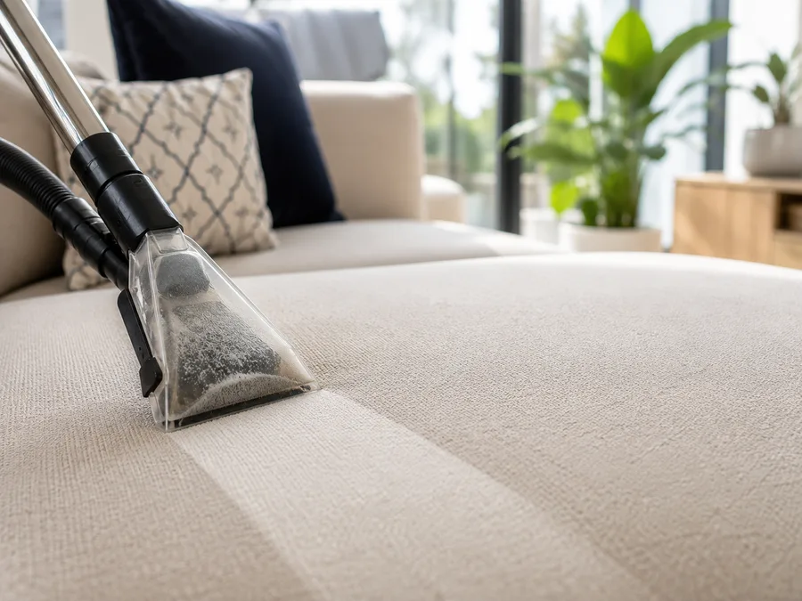

Tepovanie sedačiek, matracov a kobercov v Bratislave
Platíte čas, ktorý sa reálne odpracuje — po polhodinách, nie po celých hodinách. Prvá hodina 55 €, každá ďalšia začatá polhodina 25 €. Doprava po Bratislave aj prostriedky sú v cene.
- Prvá hodina 55 €
- Ďalšia polhodina 25 €
- Doprava po Bratislave v cene

Cenník tepovania
Účtujeme čas, nie kusy — sedačky ani matrace nie sú rovnaké. Prvá hodina 55 €, potom každá začatá polhodina 25 €. Doprava po Bratislave aj prostriedky sú v cene a neúčtujeme príplatok za silné znečistenie, zvieratá ani za víkend. Keď je práce viac, vidíte to na čase — nie na skrytej položke vo faktúre.
Sadzba
- Prvá hodina — zároveň najmenšia samostatná objednávka 55 €
- Každá ďalšia začatá polhodina 25 €
- Hodina tepovania pri upratovacom balíku 40 € / 30 €
Po prvej hodine sa účtuje po polhodinách, nie po celých hodinách.
Čo netepujeme. Biologické znečistenie — moč, zvratky, výkaly, krv, odpadovú vodu z kanalizácie a hlboké plesne. Napíšte nám to prosím už pri rezervácii.
Orientačne pri sedačkách
| Trojmiestna sedačkazvyčajne do hodiny, vrátane bokov, zadnej strany aj rozkladacieho lôžka | 55 € |
| Rohová sedačkahodina a pol až dve | 80 – 105 € |
Matrace, čalúnené stoličky aj koberce tepujeme v tej istej hodinovej sadzbe. Pri rezervácii napíšte, čo treba vytepovať, a my vám povieme, koľko času na to počítame.
Najmenšia samostatná objednávka je jedna hodina, teda 55 € — a v tej hodine zvyčajne zvládneme aj druhú vec, napríklad matrac alebo kusový koberec. Ak aj tak plánujete upratovanie, vyjde hodina tepovania lacnejšie cez upratovací balík — 40 €, pri Maxi 30 €. Platíte k nej ale aj cenu balíka, takže na jednu malú vec je najlacnejšie samostatné tepovanie za 55 €.
Pri upratovaní je tepovanie lacnejšie
Toto v Bratislave nerobí nikto iný: prídeme raz a vybavíme oboje naraz. Hodina tepovania je vtedy výrazne lacnejšia, pretože cestu už platí balík.
Hodina tepovania k upratovaciemu balíku
Za hodinu stihneme trojmiestnu sedačku, dva matrace alebo bežný kusový koberec.
- K balíkom Mini, Komfort a Klasik 40 € / hodina
- K balíku Maxi 30 € / hodina
- Aj tu sa po prvej hodine účtuje po začatých polhodinách 20 € / 15 €
- Balík Maxi + tepovanie — 8 hodín upratovania a hodina tepovania v cene 199,90 €
Trojmiestna sedačka vás tak vyjde na 30 € namiesto 55 €, a byt máte pritom upratený. Pozrite si upratovacie balíky.
Čo máte v cene
Veci, ktoré sa inde dopĺňajú na faktúre až po práci.
- Doprava po celej Bratislave — neúčtujeme ju, ani keď bývate v Devíne alebo v Čunove.
- Prostriedky a vybavenie — profesionálny extraktor aj chémia bezpečná pre deti a zvieratá.
- Cena, ktorú si viete spočítať — jedna hodinová sadzba a po prvej hodine účtovanie po polhodinách. Žiadne rozmerové pásma.
- Žiadny príplatok za znečistenie — ani za zvieratá, ani za víkend. Keď je práce viac, vidíte to na čase.
- Termín potvrdený hneď — vidíte voľné časy a rezervujete si ich online do minúty.
- Zrušenie zdarma — do 24 hodín pred termínom, bez vysvetľovania.
Ako to prebieha
Rezervácia
Napíšete, čo treba vytepovať, a vyberiete si termín online. Potvrdenie máte okamžite, aj s tým, koľko času na prácu počítame. Ak si neviete rady, zavolajte — povieme vám, čo sa do hodiny zmestí.
Tepovanie
Prídeme s extraktorom a prostriedkami. Čalúnenie najprv povysávame, ošetríme škvrny a potom vytepujeme — roztok sa vstrekne hlboko do vlákien a s nečistotami sa hneď odsaje.
Schnutie
Sedačka a matrac schnú 4 až 8 hodín, koberec 2 až 4. Preto odporúčame termín dopoludnia — večer si už sadnete na suché.
Potrebujeme len prístup k elektrike a vode. Pred začiatkom práce potvrdíme, koľko času to zaberie, aby ste sumu poznali skôr, než začneme. Starú alebo už raz čistenú škvrnu posúdime vopred a povieme vám, čo sa dá reálne dosiahnuť — nesľubujeme zázraky.
Čo tepujeme
Sedačky a kreslá
Látkové sedačky, rohové súpravy, kreslá aj čalúnené stoličky. Odstránime bežné škvrny, zažraté nečistoty aj pachy z bežného používania.
Matrace a postele
Hĺbkové vyčistenie matracov a čalúnených postelí. Vhodné pre alergikov — odstraňuje roztoče, ich výlučky aj prach.
Koberce
Kusové aj celoplošné koberce priamo u vás doma. Koberec ostane čistý, sviežy a schne rýchlejšie než čalúnenie.
Kožená sedačka
Koža sa netepuje, voda jej škodí. Vyčistíme ju ručne a ošetríme prípravkom, po ktorom ostane vláčna a vyživená.
Tepujeme vo všetkých mestských častiach Bratislavy — Petržalka, Ružinov, Staré Mesto, Nové Mesto, Dúbravka, Karlova Ves, Rača, Vrakuňa, Podunajské Biskupice, Devínska Nová Ves, Lamač, Vajnory, Záhorská Bystrica, Rusovce, Jarovce, Devín a Čunovo.
Časté otázky o tepovaní
Koľko stojí tepovanie sedačky v Bratislave?
Tepovanie účtujeme časom: 55 € za prvú hodinu, potom 25 € za každú začatú polhodinu. Trojmiestna sedačka sa zvyčajne zmestí do hodiny, teda 55 €, rohová trvá hodinu a pol až dve, čiže 80 až 105 €. Sú to orientačné čísla — dĺžka tepovania sa líši podľa druhu sedačky a podľa toho, ako je znečistená. V cene sú boky, zadná strana aj rozkladacie lôžko, doprava po Bratislave a všetky prostriedky. Najmenšia samostatná objednávka je jedna hodina, teda 55 €.
Prečo účtujete čas a nie cenu za kus?
Pretože sedačky nie sú rovnaké. Trojmiestna sedačka môže byť malá dvojmetrová aj veľká s bokmi a rozkladacím lôžkom, matrac má 80 alebo 180 centimetrov, koberec dva metre alebo dvanásť. Pri cene za kus by sme museli mať dlhý cenník s rozmerovými pásmi, alebo si doúčtovať príplatok až na mieste. Takto máte jednu hodinovú sadzbu a platíte presne to, čo sa odpracuje — po polhodinách, nie po celých hodinách.
Je doprava po Bratislave naozaj zadarmo?
Áno, v rámci Bratislavy dopravu neúčtujeme. Nepripočítavame ani príplatok za silné znečistenie, za zvieratá či za víkend. Keď je práce viac, odzrkadlí sa to na čase, nie na skrytej položke — a čas vám potvrdíme pred začiatkom práce. Prostriedky a vybavenie sú tiež v cene.
Ako dlho trvá tepovanie sedačky?
Dvojmiestnu aj trojmiestnu sedačku zvládneme zvyčajne do hodiny, rohovú za hodinu a pol až dve. Je to orientačné: rovnako pomenovaná sedačka môže byť malá dvojmetrová aj veľká s bokmi a rozkladacím lôžkom, a veľa závisí od toho, ako je znečistená. Presný čas vám povieme pri rezervácii a potvrdíme pred začiatkom práce. Účtujeme po začatých polhodinách, takže keď to ide rýchlejšie, platíte menej.
Za aký čas sedačka po tepovaní vyschne?
Zvyčajne za 4 až 8 hodín podľa materiálu, teploty a vetrania miestnosti. Koberce schnú rýchlejšie, väčšinou za 2 až 4 hodiny. Odporúčame termín dopoludnia, aby ste si večer sadli na suchú sedačku.
Tepujete aj kožené sedačky?
Kožu tepovať nemožno, voda jej škodí. Namiesto toho ju vyčistíme ručne a ošetríme prípravkom, ktorý jej vráti pružnosť. Na koženú sedačku treba zvyčajne pol hodiny až hodinu.
Čo ak sa škvrna nedá odstrániť?
Staré škvrny a škvrny, ktoré už niekto čistil, sa niekedy nedajú odstrániť úplne. Povieme vám to pred začiatkom práce, nie až po nej, aby ste sa vedeli rozhodnúť. Zázraky nesľubujeme — povieme vám vopred, čo sa reálne dá dosiahnuť.
Tepujete aj sedačku, na ktorú sa pocikal pes?
Nie. Moč, zvratky, výkaly, krv ani hlboké plesne netepujeme. Dôvod je vecný: zápach z moču býva nasiaknutý v pene a v podložke, nie na povrchu, takže by sme vám nevedeli sľúbiť výsledok — a stroj by po takej zákazke nemohol ísť k ďalšiemu zákazníkovi bez kompletnej dezinfekcie. Chlpy, prach a bežné škvrny po zvieratách tepujeme normálne a bez príplatku. Ak si tepovanie takého znečistenia napriek tomu objednáte a zistí sa to až na mieste, prácu nevykonáme a uhradená cena sa nevracia — kryje zablokovaný termín a cestu.
Platí sa vopred?
Pri rezervácii zaplatíte online kartou, cez TatraPay alebo SporoPay prvú hodinu, teda 55 €. Ak bude práce viac, povieme vám to pred začiatkom — nie po skončení — a každú ďalšiu začatú polhodinu doúčtujeme po 25 €. Termín môžete bezplatne zrušiť do 24 hodín pred začiatkom.
Dá sa tepovanie spojiť s upratovaním?
Áno a vtedy je výrazne lacnejšie. K balíkom Mini, Komfort a Klasik stojí hodina tepovania 40 €, k balíku Maxi 30 €, a po prvej hodine sa aj tu účtuje po polhodinách. Prídeme raz a vybavíme oboje naraz — za hodinu stihneme trojmiestnu sedačku alebo dva matrace.
Rezervujte si tepovanie ešte dnes
Voľné termíny vidíte hneď a potvrdenie dostanete okamžite. Zaplatíte online kartou, cez TatraPay alebo SporoPay.
Rezervovať termín Zavolať: +421 949 061 088